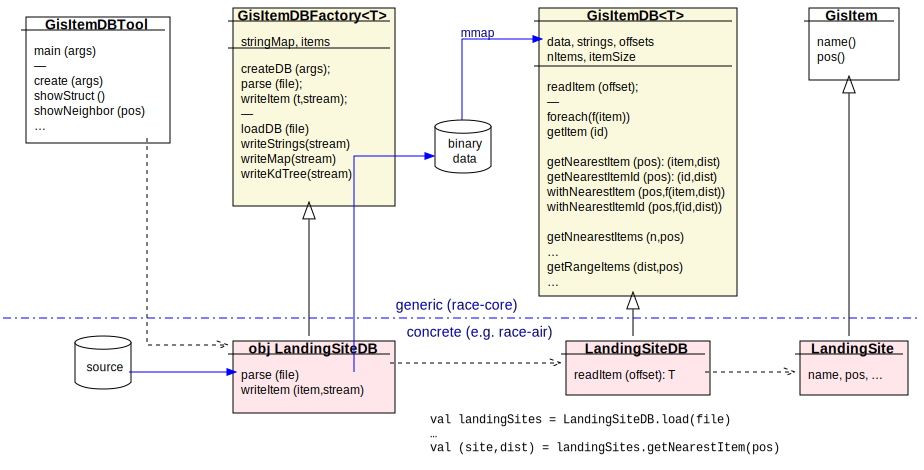
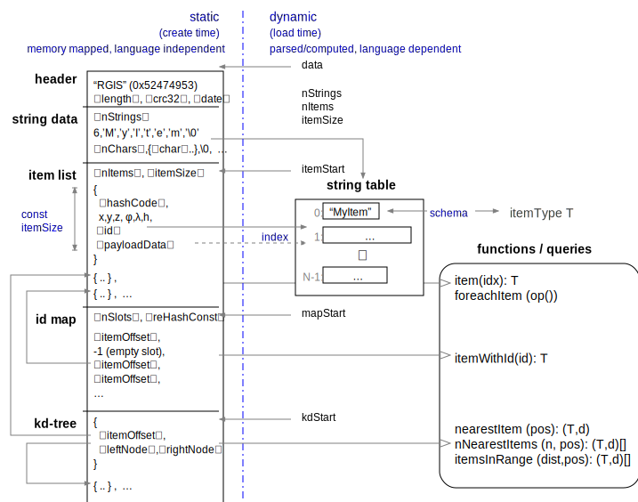

RACE GIS Support
RACE applications often require access to geographic databases in order to process tracks. Typical examples are tasks such as finding the nearest landing node for a given aircraft position, or to generate a trajectory from a flight plan that consists of waypoint names.
Most of these databases are semi-static, i.e. the data only changes periodically and is immutable during a given RACE execution. Items have alphanumeric ids, geographic positions and other fields containing scalar values and strings, e.g.:
LandingSite("KPAO",(φ=+37.46111°,λ=-122.11506°,alt=1m),"PALO ALTO",airport,civil,magvar=15.0°})Databases can contain a large number of items (>10,000), but only a small number have to be
instantiated as objects at any given time during execution (e.g. only the LandingSite objects
matching a narrow search criteria).
Four types of queries stand out:
- find item for a given name
- find nearest item and distance for a given position
- find N nearest items (sorted by distance) for a given position and max. number of items
- find all items (sorted by distance) for a given position and max. distance
This use case warrants specific support for Geographic Information Systems (GIS) in RACE. Although the raw data is often distributed as SQL code, relational databases (RDBMS) are not considered to be a suitable GIS implementation basis since they involve too much overhead (transactions, users, memory footprint) and do not efficiently support geographic queries.
Traits and Classes
RACE GIS uses a different approach. The GisItemDBTool application reads external data (e.g.
from SQL source files or retrieved via http) and translates it into a programming language
independent binary format that is stored in regular files. At RACE runtime, those files are
memory mapped and accessed by query functions that only instantiate objects satisfying the respective
queries. This approach keeps (most of) the data outside the JVM heap and allows queries in constant
space. The main implementation types are shown in the following diagram:

- GisItem
- is the trait defining common item features (name, position)
- GisItemDB[T <:GisItem]
- is the abstract base that contains the database initialization and query code. Concrete
subclasses mostly have to provide a
readItem(offset)method that instantiates concreteGisItemobjects for a given item position within the binary (mapped) data - GisItemDBFactory[T <: GisItem]
- is a abstract factory class that is used to generate binary
GisItemDBfiles and to load/ instantiate concreteGisItemDBobjects from such files - GisItemDBTool
- is a command line application that uses
GisItemDBFactoryobjects to create, check and queryGisItemDBdatabases
In order to implement a new database, the user has to create the following types:
- a
GisItemsubclass, which is usually a case class (e.g.gov.nasa.race.air.gis.Fix) that only contains (scalar) field definitions - a
GisItemDBsubclass that provides thereadItem()method to instantiate item types from binary data - a
GisItemDBFactorysubclass that is used to create the binary data for theGisItemDB. This is usually implemented as aGisItemDBcompanion object, which mainly has to provide a parser to instantiate item objects from external formats (e.g. SQL), and awriteItemPayloadFields()method that writes such items into ajava.nio.ByteBufferthat represents the binary data.
An example for such a tripple can be found in gov.nasa.race.air.gis.LandingSite.
Binary Data Model
The underlying binary data model of RACE GIS is a byte array that is partitioned into 5 sections: header, string data, item list, key map and kd-tree. The model is programming language agnostic and self contained - only internal references are allowed and all references are kept as offsets into the byte array.
Numerical values are stored in little endian format to avoid any parsing overhead on x86 and ARM architectures. String data is stored in UTF-8, but with added '0' termination to allow direct pointers from C clients in case strings are guaranteed to be ASCII. The only complex type that is allowed is the fixed size item type itself, which is composed of scalar values (integer and floating point) and string references.
The main goals for the format are to (a) allow efficient direct reads during queries, and (b) to
avoid parsing overhead during load time. The primary mode of operation is to mmap the binary
file into the clients address space and access it with a thin layer of functions that implement the
query types mentioned above.
A formal definition of the format can be found in the comment of gov.nasa.race.gis.GisItemDB

Header - this section starts with a magic token (0x52474953 : "RGIS"), followed by some fields that are used to check the consistency and version (date) of the data.
String Data - since the item records are fixed size, string values referenced from items are stored as offsets into a string array that is created upon load time from the variable length data of this section. This is the only section that needs to be translated - a step that is required in order to
- allow efficient storage of string chars as UTF-8
- avoid per-query translation of UTF-8 to native char sets
- enable sharing of string objects at runtime and across all items (strings should only be created once)
Each entry in the string data section consists of a short (2-byte) character length, followed
by a UTF-8 encoding of the string characters, followed by a '0' terminator (not used in languages
that provide native string types).
The first string that is stored in this section is always the name of the schema that represents
the item type (e.g. gov.nasa.race.air.gis.LandingSite). This is the only string that is not
referenced from the following item section.
Item List - this is the main data section that contains values for all items. It starts with the number of items in this database and the fixed byte length of item records, followed by a list of all item records that are referenced in this database. This section is the first one that is (repeatedly) processed during queries at runtime, hence all values from here on are 4-byte aligned.
Each item record consists of a standard header and an item type specific payload. The header includes a hash value of the item id, the geographic position (both as WGS84 and ECEF coordinates), and a reference to the id string for this item. The remaining payload fields are item type specific.
Key Map - the purpose of this section is to support efficient lookup of items by name. To that end, this section is implemented as a simple open hash map that uses double hashing to resolve hash collisions. Each entry of this hash map contains either the respective item list offset value for this item or -1 if the slot is un-occupied. The hash map is based on Java String hashing and uses a re-hash that is stored at the beginning of this section.
KD-Tree - the last section implements a kd-tree that
allows O(log N) searches based on positions. It contains fixed size node records that are
composed of the item offset of the respecive node data, and the node offsets of the left/right
branches for this node (-1 if empty). Kd-trees depend on efficient sub-tree pruning based on
potential nearest points in far branches, for which this implementation uses hyper-rectangles and
hence relies on ECEF (xyz) coordinates that allow efficient distance calculation. This is essential
to keep query costs low.
For details of the id hash map and kd-tree algorithms see gov.nasa.race.gis.GisItemDBFactory
for creation and gov.nasa.race.gis.GisItemDB for queries.
Client API
The public API supports two major functions: instantiation and queries. Instantiation is usually just a plain constructor call of the concrete GisItemDB class:
val fixDB: FixDB = new FixDB(file)Since this can throw exceptions during file access or DB consistency checks it should be called
from a try {..} block. Clients can use the GisItemDB.load(file) for a Option[GisItemDB[T]]
result, but note that this method does not give access to the concrete GisItemDB type (e.g. FixDB)
and hence additional methods of the concrete type are not visible.
Query support is more complex. As noted at the top of this page GisItemDB supports four types
of queries:
- item lookup by name
- nearest item for given position
- N nearest items for given position
- all items within a given position and range
All geospatial query results include respective distances of matching items to the provided position. If a query can return several items those are sorted in order of increasing distance.
In general, all queries can either ask for item instances or provide iterator functions that are called by GisItemDB for each of the query matches. Iterator functions can either take full item object arguments or only id and position if full item objects are not required.
Using iterator functions can save allocations, both in terms of result collections and item instantiations.
Name Query:
// item instantiation
val fix = fixDB.getItem("BRIXX").get
// iterator
fixDB.withItemPos(name){ (lat,lon,alt) => .. }Nearest Item:
// item instantiation
val (dist,fix) = fixDB.getNearestItem(refPos).get
// iterators
fixDB.withNearestItemId(refPos){ (dist,id) => .. }
// or
fixDB.withNearestItemIdPos(refPos){ (dist,id,lat,lon,alt) => .. }
// or
fixDB.withNearestItem(refPos){ (dist,fix) => .. }N Nearest Items:
// result list
val proximities: Seq[(Length,Fix)] = fixDB.getNearItems(refPos,maxNumber)
// iterators
fixDB.foreachNearItemId(refPos,maxNumber){ (dist,id) => .. }
// or
fixDB.foreachNearItemIdPos(refPos,maxNumber){ (dist,id,lat,lon,alt) => .. }
// or
fixDB.foreachNearItem(refPos,maxNumber){ (dist,fix) => .. }Range Items:
// result list
val proximities: Seq[(Length,Fix)] = fixDB.getRangeItems(refPos,maxDist)
// iterators
fixDB.foreachRangeItemId(refPos,maxDist){ (dist,id) => .. }
// or
fixDB.foreachRangeItemIdPos(refPos,maxDist){ (dist,id,lat,lon,alt) => .. }
// or
fixDB.foreachRangeItem(refPos,maxDist){ (dist,fix) => .. }If repetitive queries can happen at a high rate (e.g. to obtain the nearest waypoint for a frequently updated aircraft position) it is advisible to obtain and cache a respective query object from the GisItemDB:
val nearestItemQuery = fixDB.createNearestItemQuery(trackPos)
..
while (..) {
nearestItemQuery.setPos(track.position)
fixDB.processQuery(nearestItemQuery)
nearestItemQuery.withItemId { (dist,id) => .. }
..Such queries will execute in constant space if no result item objects are required. Note that clients have to ensure that query objects are not modified while the GisItemDB is processing them.
Query examples can be found in the gov.nasa.race.air.gis.FixDBSpec regression test that is
included in the race-air-test sub-project.
GisItemDBTool
The race-tools sub-project includes a gov.nasa.race.tool.GisItemDBTool command line
application that can be used to create and query GisItemDB databases interactively. The tool
is also accessible through the script/geodb shell script:
> script/geodb --help
usage GisItemDBTool$ <option>.. <arg>
options:
-i|--show-struct - show structure of DB
--show-strings - show string table contents of DB
--show-items - show item list of DB
-k|--show-key <key> - show item for given key
-n|--show-near <lat,lon> - show item(s) nearest to given pos
-m|--max-items <number> - max number of items
-r|--show-range <lat,lon,meters> - show items in given range
-o|--out <pathname> - pathname of file to generate
-f|--in <pathName> - input file
--date <dateSpec> - date to be stored in generated DB
-x|--xarg <argString> - extra arguments to be passed to concrete DB factory
args:
<clsName> - concrete GisItemDBFactory class (e.g. gov.nasa.race.air.gis.LandingSite$) - REQUIREDThe application requires the name of the GisItemDBFactory` class (not the GisItem or
GisItemDB) in order to specify the database/item type.
This is an example of how to create a database from a *.sql data distribution:
script/geodb --in ../data/usa_faa1801.data.sql --out tmp/landingsites.rgis gov.nasa.race.air.gis.LandingSiteDB\$Note how to reference a companion object (gov.nasa.race.air.gis.LandingSiteDB) as
the GisItemDBFactory object to use (bash requires the classname ending '$' to be escaped).
This is an example of how to create a database of all California fixes through FAA website queries:
> script/geodb -x "searchval=CALIFORNIA" --out tmp/fix-ca.rgis gov.nasa.race.air.gis.FixDB\$Note that '-x' arguments are passed down into the GisItemDBFactory, i.e. they are type specific.
Example how to check consistency and contents of a database:
> script/geodb -i --in tmp/landingsites.rgis gov.nasa.race.air.gis.LandingSiteDB\$
--- structure:
schema: 'gov.nasa.race.air.gis.LandingSite'
length: 866036 bytes
checkSum: ceca5b11
date: 2018-11-27T10:14:02.316-08:00
nItems: 7566
itemSize: 72
...Example how to query the 10 nearest items of a database around a given position:
script/geodb --show-near 37.62,-122.38 --max-items 10 --in tmp/landingsites.rgis gov.nasa.race.air.gis.LandingSiteDB\$
[1] 424m : LandingSite("KSFO",(φ=+37.61881°,λ=-122.37542°,alt=1m),"SAN FRANCISCO INTL",airport,civil,14.0})
[2] 15913m : LandingSite("KHAF",(φ=+37.51344°,λ=-122.50117°,alt=6m),"HALF MOON BAY",airport,civil,15.0})
...